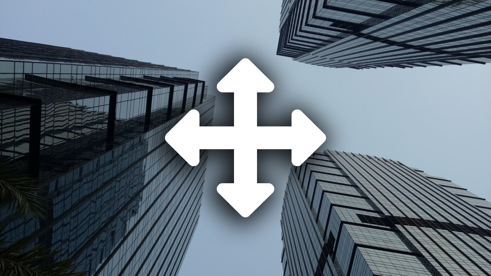

Mengambil Keputusan: Mengapa Sangat Krusial ?
Saturday, 29 October 2022
By Wicaksono Hanif Supriyanto
Waktu itu Ayah dan Ibu gue pernah bilang kalau hidup itu salah satunya adalah seni membuat keputusan. Harus gue akui pernyataan tersebut memang benar adanya, karena ternyata mengambil keputusan bukanlah suatu perkara yang sepele, melainkan sebuah proses kehidupan yang amat krusial dan kadang bikin kepikiran. Dalam prakteknya sering kali gue menganggap membuat keputusan itu ibarat melakukan sebuah perjudian yang bukan semata-mata soal untung-untungan. Hasil perjudian itu bisa saja berhasil atau gagal, menang atau kalah.
Sejak kecil kedua orang tua gue mengajarkan kepada anak-anaknya bahwa keputusan itu tidak boleh dibuat secara asal-asalan, melainkan perlu adanya pemikiran kritis yang melibatkan logika dan perasaan. Dengan demikian keputusan yang diperoleh bersifat rasional dan bukan untung-untungan yang biasanya punya potensi gagal besar.
Kasus-kasus pengambilan keputusan dapat ditemukan dalam kehidupan sehari-hari. Berdasarkan pengalaman gue, pengambilan keputusan yang paling sering adalah memilih rute berangkat dan pulang sekolah. Berhubung jarak rumah dan sekolah gue relatif jauh maka dari itu gue harus menentukan rute terbaik supaya ga kena macet. Memilih rute pergi dan pulang juga merupakan keputusan yang krusial, soalnya kalau sampai gue kena macet, tentunya bakal ada banyak dampak negatif yang dapat terjadi, seperti lebih gampang capek, konsumsi bahan bakar kendaraan memburuk yang ujung-ujungnya harus keluar uang ekstra untuk beli bensin serta yang paling menyebalkan adalah gampang tersulut emosi. Sekalinya gue salah membuat keputusan ternyata punya efek berantai yang cukup panjang.
Tapi kalau cuma sekedar memilih jalan pulang, tidak ada apa-apanya jika dibandingkan dengan memilih jalan hidup. Makin bertambahnya usia, makin terbersit di pikiran gue jalan hidup apa yang harus gue pilih. Mungkin ini adalah alasan kedua orang tua gue yang selalu medorong gue untuk menggembangkan bakat dan minat pada diri gue sejak kecil. Bagi mereka passion dan bakat inilah yang bisa menentukan arah dan pilihan hidup yang harus gue ambil. Garis besar kehidupan perlu dibuat sedini mungkin supaya jelas mau kemana dan keputusan terbaik apa yang harus diambil.
Mengambil keputusan bukanlah suatu ilmu pasti (exact). Tapi ternyata ada banyak cara untuk mempelajari ilmu yang satu ini. Ilmu ini bisa dipelajari salah satunya pada kasus-kasus berorganisasi. Sebagai contoh, berdasarkan pengalaman gue selama berorganisasi di SMP dan SMA, ketika gue ditunjuk menjadi ketua sebuah ekskul atau acara pada periode tertentu, secara tidak langsung ada suatu tujuan yang harus gue capai. Untuk mencapai tujuan itu ada banyak cara yang bisa dipilih, disinilah kebijaksanaan dan kewibawaan itu akan diuji. Dalam berorganisasi gue harus membiasakan diri bahwa keputusan yang dibuat itu harus berdasarkan musyawarah mufakat bersama seluruh anggota.
Mengambil keputusan juga bisa dipelajari dalam kegiatan pribadi, sebagai contoh pengalaman gue ketika besok ada ulangan atau ujian dan ada ajakan untuk pergi dari teman ataupun keluarga, disitulah muncul lagi pilihannya. Untuk menentukannya gue akan terlebih dahulu melihat keuntungan dan kerugian dari ajakan tersebut. Jika dirasa penting untuk mengikutinya dan sangat urgent, maka gue harus bisa memikirkan waktu belajar yang akan hilang dan cara untuk mengkompensasinya. Pembahasan mengenai manajemen waktu dan sebagainya akan gue ceritakan di artikel Catatan Mingguan Hanif berikutnya.
Oh iya kalau bicara soal pilihan, ternyata sesuatu yang kita pilih di dunia ini juga punya dampak di akhirat kelak. Pastinya kalian yang baca artikel ini dan termasuk gue kalau disuruh memilih antara ingin menjadi sukses atau gagal di akhirat, pastinya memilih untuk sukses toh? Nah, oleh sebab itu ternyata penting untuk membuat sebuah keputusan terbaik di dunia supaya bisa sukses dan berhasil di akhirat kelak. Supaya ga salah mengambil keputusan, ada banyak petunjuk yang sudah Tuhan kasih melalui Kitab Suci.
Bagi kalian yang sering ketakutan dan ragu dalam membuat sebuah keputusan, tenang aja, gue pun juga sering begitu. Tapi ada beberapa solusi yang mungkin bisa membantu kalian dalam membuat sebuah keputusan. Yang pertama adalah kenali jenis masalah dan pilihan yang akan dihadapi. Seperti contoh di awal, kalau kalian kebingungan memilih jalan mana yang nggak macet, kalian bisa melihat perkiraan di navigasi dan menyimak berita dari orang-orang sekitar untuk mendapatkan kondisi lalu lintas secara aktual. Apabila keputusan-keputusan yang harus dibuat itu menyangkut masalah personal, cobalah untuk renungkan dengan logika dan perasaan sendiri. Jika masih bingung, coba konsultasikan kepada orang-orang yang kalian percaya, seperti orang tua, teman atau guru bimbingan konseling. Terakhir yang paling penting dan yang paling utama adalah jangan lupa untuk selalu memohon petunjuk kepada Tuhan. Untuk yang beragama Islam, Shalat Istikharah bisa menjadi salah satu solusi, siapa tahu Allah SWT. menjawab doa kita dan memberikan panduan rute kehidupan yang terbaik.
Akhir kata dari gue, semoga kalian beruntung dengan apapun keputusan yang akan kalian pilih. Benar atau salahnya sebuah keputusan itu bersifat subjektif. Cobalah untuk mengkritisi sebelum memutuskan sesuatu, karena apapun keputusan yang kita pilih pastinya punya resiko masing-masing.